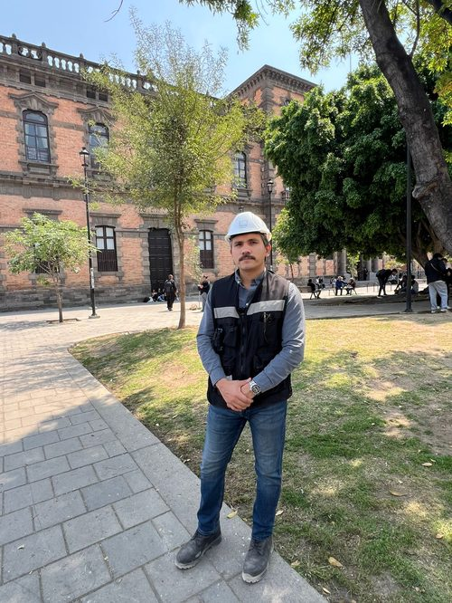

Plusvalía
Las zonas con mayor plusvalía en la ZMG
Dónde se concentró realmente la apreciación en Guadalajara y Zapopan, y por qué el precio de lista no es lo mismo que la plusvalía.
Leer análisisAvalúos comerciales, estudios de factibilidad y asesoría en compraventa con respaldo técnico y objetividad profesional.
Análisis
Estudios breves sobre el mercado inmobiliario de Jalisco, con cifras de fuentes oficiales.
Plusvalía
Las zonas con mayor plusvalía en la ZMG
Dónde se concentró realmente la apreciación en Guadalajara y Zapopan, y por qué el precio de lista no es lo mismo que la plusvalía.
Leer análisisMercado costero
Puerto Vallarta o Bahía de Banderas: ¿quién tiene más oferta?
Vallarta tiene el inventario grande; Bahía de Banderas crece más de tres veces más rápido. Las dos respuestas correctas dependen de qué estés buscando.
Leer análisisFiscal
Zapopan y su recaudación de predial
El municipio rompió la barrera de los dos mil millones. Qué significa esa cifra para el valor catastral de tu inmueble.
Leer análisisServicios
Servicios especializados para propietarios, compradores e inversionistas inmobiliarios en Jalisco.
Avalúo comercial
Valor de mercado fundamentado para casas, departamentos, locales y terrenos en Jalisco.
Avalúo de preventa
Precio estratégico para nuevos desarrollos antes de salir al mercado.
Estudio de factibilidad
Análisis técnico-económico para evaluar la viabilidad de un proyecto inmobiliario.
Asesoría en compraventa
Acompañamiento técnico para que tomes la mejor decisión al comprar o vender un inmueble.
Quién está detrás

Hugo A. Landeros Escamilla
Ingeniero Civil · Maestro en Valuación · Fundador
Con experiencia auditando y evaluando más de 30 proyectos inmobiliarios en todo México, fundé Tierra Métrica con un objetivo claro: que cada cliente conozca el valor real de su patrimonio y tome decisiones informadas, sin importar si está vendiendo o comprando.
Mi formación como Ingeniero Civil me permite evaluar no solo el valor de mercado, sino la calidad técnica del inmueble — un enfoque que va más allá del avalúo tradicional.
Cómo trabajamos
Sin tecnicismos innecesarios. En tres pasos obtienes el valor de tu inmueble con respaldo técnico.
Contacto inicial
Cuéntanos sobre tu inmueble y el servicio que necesitas. Respondemos en menos de 24 horas.
Visita e inspección
Realizamos la inspección física del inmueble y el análisis comparativo de mercado en la zona.
Entrega del dictamen
Recibes un dictamen técnico claro, fundamentado y objetivo que puedes usar con total confianza.
Respuesta en menos de 24 horas. Sin compromiso.